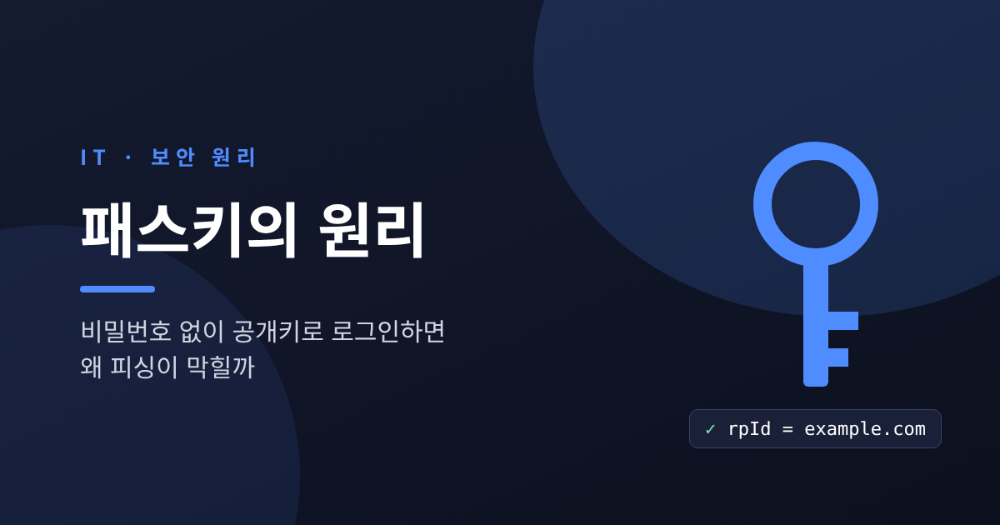
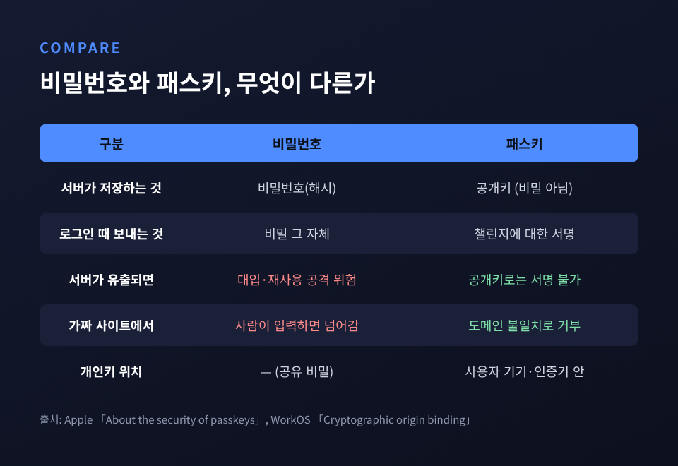
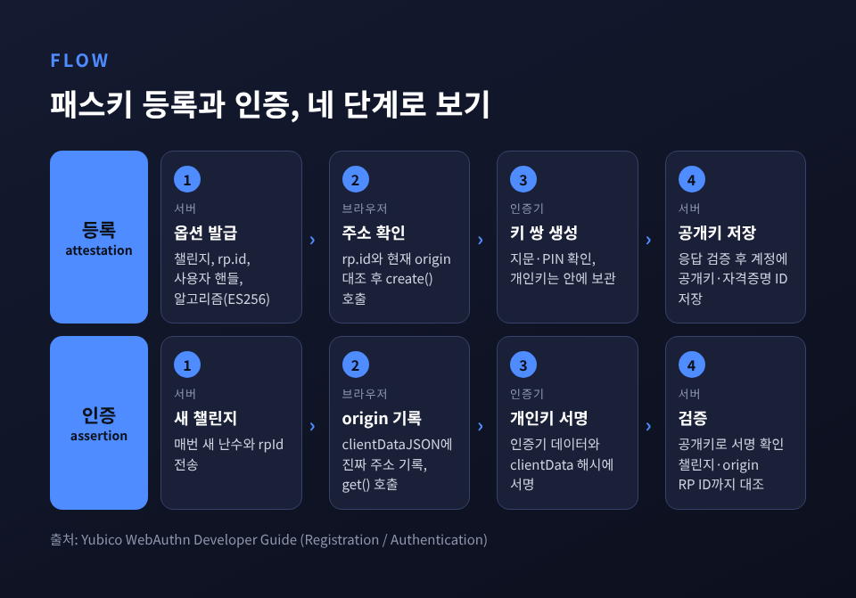
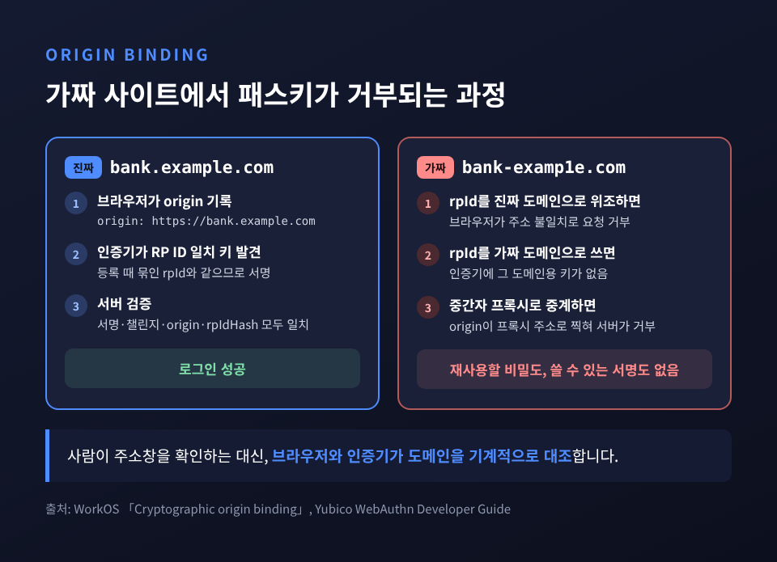
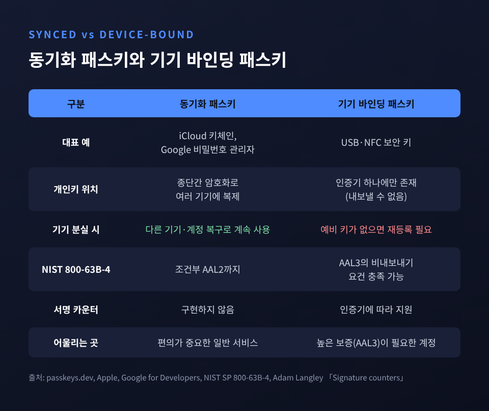
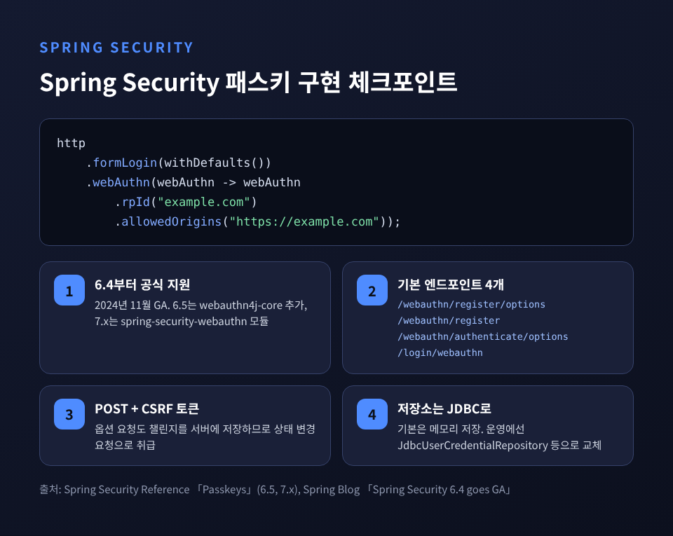

패스키 원리 — 비밀번호 없이 공개키로 로그인하면 왜 피싱이 막힐까

이번 글에서는 패스키(WebAuthn/FIDO2)가 어떤 원리로 비밀번호를 대신하는지 정리해 보겠습니다. 핵심만 먼저 말씀드리면, 패스키는 서버에 비밀을 맡기지 않고 "도메인에 묶인 서명"으로 로그인합니다. 그래서 가짜 사이트는 받아 갈 것도, 되쓸 것도 없습니다. 등록·인증 흐름, 피싱이 막히는 이유, 동기화의 득실, 그리고 Spring Security로 서버를 만드는 방법까지 차례로 살펴보겠습니다.
■ 비밀번호와 패스키, 서버가 쥐고 있는 것이 다릅니다
비밀번호 방식에서는 사용자와 서버가 같은 비밀을 나눠 가집니다. 그 비밀을 입력하는 순간, 화면이 진짜든 가짜든 비밀은 넘어갑니다.
패스키는 공개키 암호를 씁니다. 기기 안에서 키 쌍을 만들고, 서버에는 공개키만 보냅니다. 애플은 보안 안내에서 이 공개키가 "비밀이 아니다"라고 설명합니다. 서버는 개인키가 무엇인지 끝내 알지 못하고, 로그인 중에 공유 비밀이 오가지도 않습니다.
서버가 털려도 유출되는 것은 공개키뿐인 셈입니다. 공개키로는 서명을 검증할 수 있을 뿐, 서명을 만들 수는 없기 때문입니다.
용어도 짚어 두겠습니다. 패스키는 FIDO2/WebAuthn의 '발견 가능한 자격증명'을 사용자 눈높이에서 부르는 이름입니다. 아이디를 먼저 입력하지 않아도 기기가 알아서 해당 사이트의 자격증명을 찾아 줍니다. 표준도 자리를 잡았습니다. WebAuthn Level 3는 2026년 8월 25일 W3C 정식 권고안이 되었습니다.

■ 등록과 인증, 두 번의 의식으로 이뤄집니다
WebAuthn은 등록(attestation)과 인증(assertion) 두 단계로 나뉩니다.
등록은 이렇게 진행됩니다.
- 서버가 챌린지(무작위 값), RP 정보(서비스 도메인인 rp.id), 사용자 핸들, 허용 알고리즘(예: ES256)을 담은 옵션을 보냅니다.
- 브라우저는 rp.id가 지금 접속한 주소와 맞는지 먼저 확인하고
navigator.credentials.create()로 인증기를 부릅니다. - 인증기는 지문이나 기기 PIN으로 사용자를 확인한 뒤 새 키 쌍을 만듭니다. 개인키는 안에 숨기고, 공개키와 자격증명 ID를 돌려줍니다.
- 서버는 응답을 검증하고 공개키를 계정에 저장합니다.
이때 돌아오는 데이터에는 RP ID의 SHA-256 해시(rpIdHash)와 브라우저가 기록한 origin이 함께 들어갑니다. 인증기의 제조사·모델을 증명하는 attestation도 붙일 수 있지만 선택 사항입니다. 기본값은 none입니다.
인증은 더 짧습니다.
- 서버가 새 챌린지와 rpId를 보냅니다.
- 인증기는 그 rpId에 해당하는 자격증명을 찾아, 사용자 확인 후 authenticatorData와 clientDataJSON 해시에 개인키로 서명합니다.
- 서버는 저장해 둔 공개키로 서명을 검증하고, 챌린지와 origin, RP ID가 기대한 값인지 대조합니다.
챌린지는 매번 새로 만들어집니다. 어제 엿본 서명을 오늘 다시 내밀어도 통하지 않는 이유입니다.

■ 피싱이 막히는 진짜 이유는 origin 바인딩입니다
비밀번호 시대의 피싱 방어는 결국 사람의 눈에 기댔습니다. 주소창을 꼼꼼히 보라는 당부가 대표적입니다. 패스키는 그 판단을 기계에게 넘깁니다.
먼저 브라우저가 지금 열린 페이지의 진짜 origin을 clientDataJSON에 적습니다. WorkOS의 분석에 따르면 이 값은 페이지의 자바스크립트가 덮어쓸 수 없습니다. 그리고 서명 대상에 포함됩니다.
인증기도 따로 확인합니다. 자격증명은 등록할 때의 RP ID에 묶여 있고, 그 해시가 서명된 데이터에 들어갑니다.
예를 들어 공격자가 bank.example.com을 흉내 낸 bank-examp1e.com을 만들었다고 해 보겠습니다.
- 가짜 사이트가 rpId를 진짜 도메인으로 적으면, 브라우저가 자기 주소와 맞지 않는다며 요청을 거부합니다. 인증기는 호출조차 되지 않습니다.
- 가짜 도메인을 rpId로 쓰면, 인증기에는 그 도메인용 자격증명이 없습니다.
중간자 프록시(Evilginx 같은 도구)는 어떨까요. 챌린지를 진짜 서버에서 받아 중계할 수는 있습니다. 하지만 브라우저가 origin을 프록시 주소로 기록하므로, 진짜 서버가 검증 단계에서 응답을 버립니다. 문자 인증번호(OTP)는 사람이 직접 옮겨 적기 때문에 실시간 중계에 뚫립니다. WorkOS는 이런 MFA가 공격자에게 "지연을 줄 뿐 불가능하게 만들지는 않는다"고 평가합니다.
비밀번호는 사람이 도메인을 확인하고, 패스키는 브라우저와 인증기가 도메인을 확인합니다.

■ 인증기는 두 갈래, 패스키는 두 형태입니다
인증기는 크게 둘입니다.
- 플랫폼 인증기: 휴대폰·노트북에 내장된 것. Face ID, 지문, 화면 잠금 PIN으로 승인합니다.
- 로밍 인증기: USB·NFC·블루투스로 꽂거나 대는 보안 키입니다.
휴대폰은 로밍 인증기 역할도 합니다. PC 화면의 QR을 휴대폰으로 찍으면, QR·블루투스·인터넷을 조합해 두 기기 사이에 보안 채널을 엽니다. 여기서 블루투스는 두 기기가 실제로 가까이 있는지 확인하는 장치입니다. 멀리 있는 공격자가 QR만 보내서는 서명을 받아 낼 수 없게 하려는 설계입니다.
저장 방식으로 나누면 동기화 패스키와 기기 바인딩 패스키가 있습니다.
예전에는 키가 기기 하나에 갇혀 있었습니다. 휴대폰을 바꾸면 사이트마다 다시 등록해야 했습니다. 지금은 애플 iCloud 키체인, 구글 비밀번호 관리자가 패스키를 기기 간에 동기화합니다. 두 회사 모두 종단간 암호화를 명시하고, 애플은 그 키를 자사도 알지 못한다고 밝힙니다.
다만 편의에는 대가가 있습니다. 미국 NIST의 디지털 인증 지침 SP 800-63B-4는 동기화 가능 인증기를 조건부로 AAL2까지 인정합니다. 최고 등급인 AAL3에서는 쓸 수 없습니다. AAL3는 개인키를 밖으로 꺼낼 수 없어야 하는데, 동기화는 그 자체로 키를 내보내는 일이기 때문입니다. WebAuthn Level 3에는 Backup Eligible·Backup State 플래그가 있어, 서버가 동기화 가능한 키인지 구분할 수 있습니다.

■ 계정 복구와 한계도 함께 보셔야 합니다
패스키가 모든 문제를 지우지는 않습니다.
첫째, 복구 경로가 새 약점이 됩니다. 애플은 모든 기기를 잃었을 때 iCloud 암호, 문자 응답, 기기 암호를 모두 요구하고 10번 실패하면 복구 기록을 파기합니다. 보안 키만 쓴다면 예비 키를 따로 등록해 두는 편이 안전합니다.
둘째, 대체 로그인이 남아 있으면 그쪽으로 끌려갑니다. Proofpoint 연구원은 패스키를 지원하지 않는 브라우저로 위장해 오류를 띄우고, 사용자를 인증 앱이나 SMS 같은 약한 수단으로 유도하는 다운그레이드 기법을 공개했습니다(2025년 8월 보도). 실제 공격 사례는 확인되지 않았지만 기술적으로는 가능하다고 했습니다.
셋째, 보호 범위는 로그인 순간까지입니다. 로그인 뒤 세션 쿠키를 훔치거나, 브라우저 자체가 악성 확장에 장악된 경우는 origin 바인딩이 막아 주지 않습니다.
넷째, 복제 탐지 장치가 약해졌습니다. 원래 서명 카운터는 매번 올라가며 복제된 인증기를 잡는 용도였습니다. 그러나 암호학자 Adam Langley는 동기화 패스키가 이 카운터를 구현하지 않는다고 설명합니다. 여러 기기가 같은 숫자를 맞출 수 없어서입니다.
그럼에도 숫자는 꽤 분명합니다. FIDO 얼라이언스의 2026년 패스키 지수(15개 서비스 집계)에서 로그인 성공률은 패스키 93%, 비밀번호·기존 MFA 78%였습니다. 로그인은 평균 2.8배 빨랐고, 측정한 8곳 모두 피싱 성공이 줄었다고 답했습니다. 93%라는 성공률은 2025년 지수에서도 같았습니다.
■ Spring Security로 서버를 만든다면
서버 개발자라면 반가운 소식이 있습니다. Spring Security는 2024년 11월 GA된 6.4 버전부터 패스키를 공식 지원합니다. 공식 레퍼런스에 "Passkeys" 장이 따로 있습니다.
의존성은 버전에 따라 다릅니다. 6.5 문서는 spring-security-web에 webauthn4j-core를 직접 추가하라고 안내합니다. 최신 7.x 문서는 spring-security-webauthn 모듈을 씁니다.
설정은 짧습니다.
http
.formLogin(withDefaults())
.webAuthn(webAuthn -> webAuthn
.rpId("example.com")
.allowedOrigins("https://example.com")
);
이 몇 줄로 네 개의 엔드포인트가 열립니다.
POST /webauthn/register/options— 로그인한 사용자의 등록 옵션(챌린지 포함) 발급POST /webauthn/register— 브라우저가 만든 자격증명 등록POST /webauthn/authenticate/options— 인증 옵션 발급POST /login/webauthn— 서명을 검증하고 로그인 처리
눈여겨볼 점이 몇 가지 있습니다.
옵션 요청도 챌린지를 서버에 저장하므로 GET이 아니라 POST이고, CSRF 토큰이 필요합니다.
자격증명 저장소(UserCredentialRepository 등)의 기본값은 메모리입니다. 운영에서는 JdbcUserCredentialRepository 같은 JDBC 구현으로 바꿔야 재시작 후에도 패스키가 남습니다.
rpId도 신중히 정해야 합니다. 인증 때의 rpId는 등록 때의 값과 정확히 같아야 하므로, 나중에 바꾸면 기존 패스키를 쓸 수 없게 됩니다. 처음부터 서비스의 대표 도메인으로 정하시길 권합니다.

정리하면 이렇습니다. 패스키는 비밀을 숨기는 기술이 아니라, 숨길 비밀을 애초에 서버에 두지 않는 기술입니다. 그리고 서명마다 도메인 이름을 새겨 넣어 다른 곳에서는 쓸모가 없게 만듭니다.
"피싱을 막는 것은 사람의 주의력이 아니라 도메인에 묶인 서명입니다."
물론 복구 경로와 대체 로그인을 함께 단단히 하지 않으면 빈틈은 남습니다. 그래도 지금 새 서비스의 로그인을 설계하신다면, 저는 패스키를 첫 번째 선택지에 두겠습니다.
참고 자료
- W3C — WebAuthn Level 3 W3C Recommendation 발표 (2026)
- FIDO Alliance — WebAuthn Level 3 is now a W3C Recommendation
- passkeys.dev — Terms
- Yubico — WebAuthn Client Registration
- Yubico — WebAuthn Client Authentication
- WorkOS — Cryptographic origin binding
- Apple — 패스키의 보안에 관하여
- Google for Developers — Passkey support on Android and Chrome
- NIST SP 800-63B-4 — Authenticator Assurance Levels
- NIST SP 800-63B-4 — Syncable Authenticators
- FIDO Alliance — Passkey Index October 2026 (PDF)
- Mobile ID World — FIDO Passkey Index 2025 보도
- Adam Langley — Signature counters
- CyberInsider — FIDO 패스키 다운그레이드 공격 보도
- Thales Docs — Hybrid transport
- Spring Security Reference — Passkeys
- Spring Security Reference 6.5 — Passkeys
- Spring Blog — Spring Security 6.4 goes GA